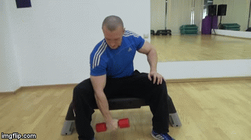

Утренние упражнения:
1) Вращение стопы:
Левая нога х10 в каждую сторону12Правая нога х10 в каждую сторону12- Как это делать:

2) Вращение коленей:
х10 в каждую сторону12- Как это делать:
3) Приседы:
х6 раз1- Как это делать:

4) Вращение таза:
х10 в каждую сторону12- Как это делать:

5) Ккруговые вращения бедром:
х5 в каждую сторону1- Как это делать:

6) Вращение туловищем:
х5 в каждую сторону12- Как это делать:

7) Вращение плечами:
х10 в каждую сторону12- Как это делать:
8) Мельница:
х5 к каждой стороне12- Как это делать:
9) Прогиб назад:
х212- Как это делать:
10) Вращение руками в локтях:
х10 в две стороны12- Как это делать:
11) Вращение локтями:
х10 в каждую сторону12- Как это делать:
12) Вращение кистями:
х10 в каждую сторону12- Как это делать:
13) Вытягивание вверх с поднятыми руками:
х10 в каждую сторону12- Как это делать:
14) Умывание:
х10 в каждую сторону12- Как это делать:
15) Поворот головы вправо-влево:
х10 в каждую сторону12- Как это делать:
16) Голова к плечам:
х10 в каждую сторону12- Как это делать:
17) Круговые движения головой:
х10 в каждую сторону12- Как это делать: